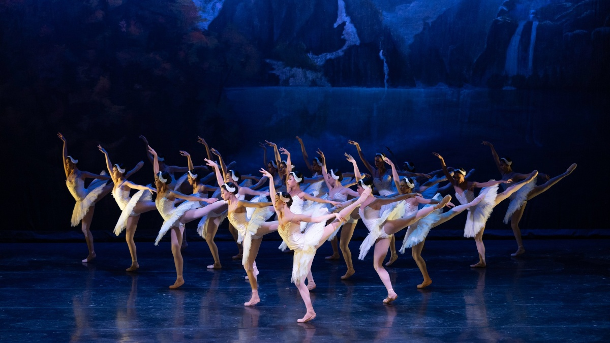

1.- ¿Para que aprender a diseñar sitios web?
Para lograr que las personas ven mis habilidades en los sitios web y que las personas les interese venir a visitar mi sitio con entusiasmo.
2.- ¿Comenta sobre tu sitio?
Pues es un sitio que muestra los que nos muestra algo sobre la danza, y para ver los tipos de esta misma
3.- ¿Que te deja esta salida ocupacional?
Una felicidad enorme, ya que aprendi demasiadas cosas buenas y mejor por ser de tecnologias modernas, tambien mucho conocimiento del positivo
4.- Un comentario del curso, lo que se aprendiste
Aprendí a como editar mi propio audio y popr ende videos, a como hacer y editar un sitio web y por su pusto igual a como decorarlo adecuadamente.
